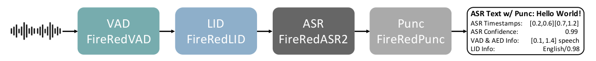
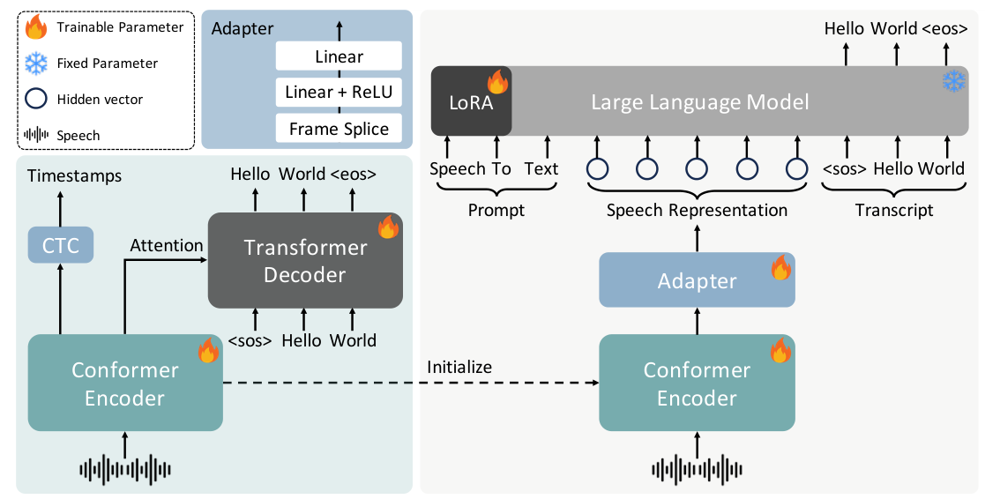

Kaituo Xu, Yan Jia, Kai Huang, Junjie Chen, Wenpeng Li, Kun LiuKaituo Xu, Yan Jia, Kai Huang, Junjie Chen, Wenpeng Li, Kun Liu
Feng-Long Xie, Xu Tang, Yao Hu Super Intelligence Team, Xiaohongshu Inc.
Feng-Long Xie、Xu Tang、Yao Hu，小红书公司 Super Intelligence 团队。（作者单位行）
摘要Abstract
We present FireRedASR2S, a state-of-the-art industrial-grade all-in-one automatic speech recognition (ASR) system. It integrates four modules in a unified pipeline: ASR, Voice Activity Detection (VAD), Spoken Language Identification (LID), and Punctuation Prediction (Punc). All modules achieve SOTA performance on the evaluated benchmarks: FireRedASR2: An ASR module with two variants, FireRedASR2-LLM (8B+ parameters) and FireRedASR2-AED (1B+ parameters), supporting speech and singing transcription for Mandarin, Chinese dialects and accents, English, and codeswitching. Compared to FireRedASR, FireRedASR2 delivers improved recognition accuracy and broader dialect and accent coverage. FireRedASR2-LLM achieves
我们推出 FireRedASR2S，一套业界领先（SOTA）的工业级一体化自动语音识别（ASR）系统。它将四个模块整合进一条统一的流水线：ASR、语音活动检测（VAD）、口语语种识别（LID）和标点预测（Punc）。所有模块在所评测的基准上都达到了 SOTA 性能。FireRedASR2：ASR 模块，包含两个变体 FireRedASR2-LLM（8B+ 参数）与 FireRedASR2-AED（1B+ 参数），支持普通话、中文方言与口音、英语以及语码混合（code-switching）场景下的语音与歌声转写。与 FireRedASR 相比，FireRedASR2 的识别精度更高，方言与口音覆盖更广。FireRedASR2-LLM 在 4 个公开普通话基准上取得 2.89% 的平均 CER，在 19 个公开中文方言与口音基准上取得 11.55% 的平均 CER，优于 Doubao-ASR、Qwen3-ASR 和 Fun-ASR 等强竞争基线。
2.89% average CER on 4 public Mandarin benchmarks and 11.55% on 19 publicChinese dialects and accents benchmarks, outperforming competitive baselines including Doubao-ASR, Qwen3-ASR, and Fun-ASR. FireRedVAD: An ultra-lightweight module (0.6M parameters) based on the Deep Feedforward Sequential Memory Network (DFSMN), supporting streaming VAD, non-streaming VAD, and multi-label VAD (mVAD). On the FLEURS-VAD-102 benchmark, it achieves 97.57% frame-level F1 and 99.60% AUC-ROC, outperforming Silero-VAD, TEN-VAD, FunASR-VAD, and WebRTC-VAD. FireRedLID: An Encoder-Decoder LID module supporting 100+ languages and 20+ Chinese dialects and accents. On FLEURS (82 languages), it achieves 97.18% utterance-level accuracy, outperforming Whisper and SpeechBrain. FireRedPunc: A BERT-style punctuation prediction module for Chinese and English. On multi-domain benchmarks, it achieves 78.90% average F1, outperforming FunASR-Punc (62.77%). To advance research in speech processing, we release model weights and code at https://github.com/FireRedTeam/FireRedASR2S.
FireRedASR2-LLM 在 4 个公开普通话基准上取得 2.89% 的平均 CER，在 19 个公开中文方言与口音基准上取得 11.55% 的平均 CER，优于 Doubao-ASR、Qwen3-ASR 和 Fun-ASR 等强竞争基线。FireRedVAD：一个基于深度前馈序列记忆网络（DFSMN）的超轻量模块（0.6M 参数），支持流式 VAD、非流式 VAD 和多标签 VAD（mVAD）。在 FLEURS-VAD-102 基准上，它取得 97.57% 的帧级 F1 和 99.60% 的 AUC-ROC，优于 Silero-VAD、TEN-VAD、FunASR-VAD 和 WebRTC-VAD。FireRedLID：一个基于编码器-解码器的 LID 模块，支持 100+ 语种和 20+ 中文方言与口音。在 FLEURS（82 种语言）上，它取得 97.18% 的句级准确率，优于 Whisper 和 SpeechBrain。FireRedPunc：一个面向中文和英文的 BERT 式标点预测模块。在多领域基准上，它取得 78.90% 的平均 F1，优于 FunASR-Punc（62.77%）。为推动语音处理研究，我们在 https://github.com/FireRedTeam/FireRedASR2S 开放了模型权重与代码。
1 1 引言Introduction
Automatic speech recognition (ASR) has advanced rapidly with end-to-end modeling, large-scale training, and the integration of large language models (LLMs) [1–19]. However, practical deployment in real-world applications typically requires more than a standalone ASR model. Real-world audio often contains long-form recordings, silence and non-speech regions, background music, singing, multilingual speech, and Chinese dialects and accents (hereafter referred to as dialects for brevity). To deliver reliable transcription in such conditions, a complete pipeline is needed, including voice activity detection (VAD) for segmentation, spoken language identification (LID) for routing and tagging, and punctuation prediction (Punc) for readable outputs.
随着端到端建模、大规模训练以及大语言模型（LLM）的引入 [1–19]，自动语音识别（ASR）发展迅速。然而，真实应用中的实际部署所需的往往不只是一个孤立的 ASR 模型。真实音频常常包含长时录音、静音与非语音区段、背景音乐、歌声、多语种语音，以及中文方言与口音（为简洁起见，下文统称方言）。为了在这类条件下产出可靠的转写，需要一条完整的流水线，包括用于切分的语音活动检测（VAD）、用于路由与打标的口语语种识别（LID），以及用于提升输出可读性的标点预测（Punc）。
In practice, many systems are built by assembling modules from heterogeneous sources (e.g., separate VAD/LID/ASR/Punc toolkits or cloud services). Such pipelines frequently suffer from inconsistent interfaces, limited reproducibility, and complex error propagation. Moreover, some components rely on weak or indirect supervision (e.g., VAD trained from ASR forced alignment), which may degrade robustness under challenging acoustic conditions. These limitations motivate an opensource, industrial-grade all-in-one ASR system with strong performance, clear modularization, and comprehensive evaluation.
在实践中，许多系统是通过拼装来自异构来源的模块搭建的（例如各自独立的 VAD/LID/ASR/Punc 工具包或云服务）。这类流水线经常面临接口不一致、可复现性有限以及复杂的误差传播问题。此外，一些组件这些局限促使我们构建一个开源的、工业级的一体化 ASR 系统，具备强性能、清晰的模块化划分和全面的评测。
In this technical report, we present FireRedASR2S, a state-of-the-art (SOTA), all-in-one ASR system integrating four modules: FireRedASR2 for ASR, FireRedVAD for VAD and multi-label VAD (mVAD), FireRedLID for multilingual and dialect LID, and FireRedPunc for punctuation prediction. The suffix 2S denotes the 2nd-generation FireRedASR, expanded into an all-in-one ASR System. FireRedASR2S provides a unified pipeline from waveform to structured transcription outputs, while allowing each module to be deployed independently.
在这份技术报告中，我们提出 FireRedASR2S——一套业界领先（SOTA）的一体化 ASR 系统，整合了四个模块：负责 ASR 的 FireRedASR2、负责 VAD 与多标签 VAD（mVAD）的 FireRedVAD、负责多语种与方言 LID 的 FireRedLID，以及负责标点预测的 FireRedPunc。后缀 2S 表示第二代 FireRedASR，并扩展为一体化 ASR 系统（System）。FireRedASR2S 提供从波形到结构化转写输出的统一流水线，同时允许每个模块独立部署。
FireRedASR2 builds upon our previous FireRedASR [1] models with minimal architectural changes. Compared to FireRedASR, FireRedASR2 improves recognition accuracy and expands coverage to a broader range of Chinese dialects, primarily by scaling supervised training data to approximately 200k hours with broader domain, language, and dialect diversity. FireRedVAD is trained on thousands of hours of high-quality human-annotated acoustic event data, providing reliable segmentation under diverse acoustic conditions. FireRedLID is implemented as an Encoder-Decoder-based [20, 21] model initialized from the FireRedASR2-AED encoder and performs hierarchical language and dialect prediction. FireRedPunc adopts a BERT-style encoder [22] initialized from LERT [23] and is trained on large-scale multi-domain Chinese and English corpora.
FireRedASR2 在我们此前的 FireRedASR [1] 模型基础上构建，架构改动很小。与 FireRedASR 相比，FireRedASR2 提升了识别精度并将覆盖范围扩展到更广的中文方言，其主要手段是把监督训练数据扩展到约 200k 小时，并覆盖更丰富的领域、语种与方言多样性。FireRedVAD 在数千小时高质量人工标注的声学事件数据上训练，能够在多样声学条件下提供可靠的切分。FireRedLID 实现为一个基于编码器-解码器 [20, 21] 的模型，以 FireRedASR2-AED 的编码器初始化，并执行分层级的语种与方言预测。FireRedPunc 采用 BERT 式编码器 [22]，以 LERT [23] 初始化，并在大规模多领域中文与英文语料上训练。
Our main contributions are:
我们的主要贡献如下：
• All-in-one open-source system: We release an integrated ASR pipeline with unified interfaces and modular deployment.
• 一体化开源系统：我们发布了一条具有统一接口和模块化部署能力的集成 ASR 流水线。
• Improved ASR accuracy and broader dialect coverage: Building upon FireRedASR, FireRedASR2 improves recognition accuracy and expands support for Chinese dialects, achieving strong results on 24 public test sets.
• 更高的 ASR 精度与更广的方言覆盖：在 FireRedASR 基础上，FireRedASR2 提升了识别精度并扩展了对中文方言的支持，在 24 个公开测试集上取得了强结果。
• Robust segmentation from human-labeled events: FireRedVAD provides strong multilingual VAD performance and is trained using high-quality human-annotated event data rather than forced-alignment-derived supervision.
• 来自人工标注事件的鲁棒切分：FireRedVAD 提供了强多语种 VAD 性能，其训练使用高质量人工标注的事件数据，而非由强制对齐导出的监督信号。
• Hierarchical multilingual and dialect LID: FireRedLID supports 100+ languages and 20+ Chinese dialects with a compact two-token decoding formulation.
• 分层级的多语种与方言 LID：FireRedLID 以紧凑的两 token 解码形式支持 100+ 语种和 20+ 中文方言。
• Effective punctuation prediction: FireRedPunc achieves strong results on multi-domain Chinese and English punctuation benchmarks.
• 有效的标点预测：FireRedPunc 在多领域中文与英文标点基准上取得强结果。
The remainder of this report is organized as follows. Section 2 presents the system overview.
本报告其余部分组织如下。第 2 节给出系统概览。
Sections 3 to 6 describe each module. Section 7 reports evaluation results. Section 8 discusses keydesign choices and limitations, and Section 9 concludes the report.
第 8 节讨论关键设计选择与局限，第 9 节总结全文。
2 2 FireRedASR2S：系统概览FireRedASR2S: System Overview
FireRedASR2S is an industrial-grade, all-in-one ASR system that integrates four modules— FireRedVAD (Section 4), FireRedLID (Section 5), FireRedASR2 (Section 3), and FireRedPunc (Section 6)—into a unified pipeline. The system is designed in a modular manner: each component can be used independently, while the default configuration forms an end-to-end transcription pipeline that handles diverse acoustic conditions (speech, singing, music, and non-speech) as well as multilingual and Chinese dialect scenarios, and produces structured outputs including punctuated text, timestamps, confidence scores, and language labels.
FireRedASR2S 是一套工业级一体化 ASR 系统，将四个模块——FireRedVAD（第 4 节）、FireRedLID（第 5 节）、FireRedASR2（第 3 节）和 FireRedPunc（第 6 节）——整合进一条统一的流水线。系统采用模块化设计：每个组件都可独立使用，而默认配置构成一条端到端转写流水线，既能处理多样声学条件（语音、歌声、音乐与非语音），也能处理多语种与中文方言场景，并产出包含带标点文本、时间戳、置信度分数和语种标签的结构化输出。
Pipeline: As illustrated in Figure 1, FireRedASR2S processes an input waveform through four stages. First, FireRedVAD detects voice segments on the original audio timeline and filters out non-voice regions to improve robustness on long-form audio. Second, FireRedLID predicts an utterance-level language label for each detected segment and, when applicable, a Chinese dialect label. Third, FireRedASR2 transcribes each segment into text and returns an ASR confidence score; when using FireRedASR2-AED, it additionally provides token- and word-level timestamps. Finally, FireRedPunc restores punctuation for the ASR output to improve readability and downstream usability.
流水线：如 Figure 1 所示，FireRedASR2S 将输入波形依次经过四个阶段处理。首先，FireRedVAD 在原始音频时间轴上检测语音段并滤除非语音区段，以提升长音频上的鲁棒性。其次，FireRedLID 为每个检测到的语音段预测一个句级语种标签，并在适用时预测一个中文方言标签。第三，FireRedASR2 将每个语音段转写为文本并返回一个 ASR 置信度分数；使用 FireRedASR2-AED 时，还会额外提供 token 级与词级时间戳。最后，FireRedPunc 为 ASR 输出恢复标点，以提升可读性与下游可用性。
VAD FireRedVAD LID FireRedLID ASR Text w/ Punc: Hello World!
ASR 带标点文本：Hello World!
ASR Timestamps:
（图 1 流水线标签：ASR Timestamps: [0.2,0.6][0.7,1.2]；ASR Confidence: 0.99；VAD & AED Info: [0.1, 1.4] speech；LID Info: English/0.98；ASR FireRedASR2；Punc FireRedPunc。）
[0.2,0.6][0.7,1.2]ASR Confidence:0.99VAD & AED Info: [0.1, 1.4] speech LID Info: English/0.98 ASR FireRedASR2 Punc FireRedPunc
（图 1 流水线标签：ASR Timestamps: [0.2,0.6][0.7,1.2]；ASR Confidence: 0.99；VAD & AED Info: [0.1, 1.4] speech；LID Info: English/0.98；ASR FireRedASR2；Punc FireRedPunc。）

图Figure 1: Overview of FireRedASR2S. The input waveform is processed sequentially by FireRedVAD (VAD), FireRedLID (LID), FireRedASR2 (ASR), and FireRedPunc (Punc) to produce structured transcription outputs, including punctuated text, timestamps, confidence scores, and language labels.
Figure 1：FireRedASR2S 概览。输入波形依次经过 FireRedVAD（VAD）、FireRedLID（LID）、FireRedASR2（ASR）和 FireRedPunc（Punc）处理，产出结构化转写输出，包括带标点文本、时间戳、置信度分数和语种标签。
Structured outputs: FireRedASR2S returns structured outputs containing (1) the final transcription text, (2) a list of sentence-level segments with start/end timestamps, recognized text, ASR confidence, and optional language labels with confidence, and (3) VAD segmentation results. When ASR timestamping is enabled, the system can further derive sentence-level timestamps by leveraging punctuation prediction. All timestamps are reported on the original waveform timeline.
结构化输出：FireRedASR2S 返回的结构化输出包含（1）最终转写文本，（2）句级分段列表（含起止时间戳、识别文本、ASR 置信度，以及可选的带置信度语种标签），以及（3）VAD 切分结果。当启用 ASR 时间戳时，系统还可以借助标点预测进一步导出句级时间戳。所有时间戳都在原始波形时间轴上报告。
Modularity: Although FireRedASR2S is designed as an end-to-end pipeline, each module can be deployed as a standalone component (e.g., VAD-only segmentation, LID-only routing, ASR on pre-segmented audio, or punctuation on plain text). This modular design enables flexible deployment and independent iteration of each component.
模块化：尽管 FireRedASR2S 被设计为端到端流水线，每个模块都可以作为独立组件部署（例如仅做 VAD 切分、仅做 LID 路由、对已切分音频做 ASR，或对纯文本做标点恢复）。这种模块化设计支持灵活部署与各组件的独立迭代。
3 3 FireRedASR2：自动语音识别FireRedASR2: Automatic Speech Recognition
We summarize the key components of FireRedASR2 here and highlight the incremental updates. For detailed specifications of the Conformer and Transformer blocks, the Encoder-Adapter-LLM training procedure, and the optimization strategies, we refer readers to the FireRedASR technical report [1].
我们在此概述 FireRedASR2 的关键组件，并重点说明增量更新。关于 Conformer 与 Transformer 模块、Encoder-Adapter-LLM 训练流程以及优化策略的详细规格，请读者参阅 FireRedASR 技术报告 [1]。
FireRedASR2 comprises two variants: FireRedASR2-AED and FireRedASR2-LLM. FireRedASR2- AED follows the conventional Attention-based Encoder-Decoder architecture [20, 21], whereas FireRedASR2-LLM is built on the Encoder-Adapter-LLM architecture [1–4, 10, 18, 19] that leverages the power of LLM for ASR. Both models share similar input feature processing and acoustic encoding strategies but differ in their approaches to token sequence modeling. FireRedASR2-AED additionally supports token-level timestamps and utterance-level confidence scores. Word-level timestamps are obtained by post-processing token timestamps (e.g., merging English subword units into words).
FireRedASR2 包含两个变体：FireRedASR2-AED 与 FireRedASR2-LLM。FireRedASR2-AED 遵循传统的基于注意力的编码器-解码器（AED）架构 [20, 21]，而 FireRedASR2-LLM 构建在 Encoder-Adapter-LLM 架构 [1–4, 10, 18, 19] 之上，借助 LLM 的能力做 ASR。两个模型共享相似的输入特征处理与声学编码策略，但在 token 序列建模方式上不同。FireRedASR2-AED 额外支持 token 级时间戳与句级置信度分数。词级时间戳通过对 token 时间戳做后处理获得（例如把英文子词单元合并成词）。
Adapter Trainable Parameter Linear Fixed Parameter Linear + ReLU LoRA Hidden vector Frame Splice Speech Speech Hello World <eos> Timestamps Prompt CTC Transformer Attention Decoder <sos> Hello World Initialize Conformer Encoder World <eos> Hello Large Language Model Hello World <sos> To Text Transcript Speech Representation Adapter Conformer Encoder
（图 2 架构标签：Adapter（可训练参数 Linear / 固定参数 Linear+ReLU / LoRA）；Hidden vector；Frame Splice；语音「Hello World」<eos>；Timestamps prompt；CTC；Transformer Attention Decoder；<sos>；初始化 Conformer Encoder；Large Language Model；输出文本转写；语音表示 Adapter。）

图Figure 2: Architecture of FireRedASR2-AED (bottom left), FireRedASR2-LLM (right), and Adapter.
Figure 2：FireRedASR2-AED（左下）、FireRedASR2-LLM（右）与 Adapter 的架构。
3.1 3.1 FireRedASR2-AED：基于注意力的编码器-解码器 ASR 模型FireRedASR2-AED: Attention-based Encoder-Decoder ASR model
The overall architecture of FireRedASR2-AED is illustrated in Figure 2 (bottom left).
FireRedASR2-AED 的整体架构如 Figure 2（左下）所示。
Architecture: FireRedASR2-AED adopts an end-to-end ASR architecture that follows the Conformerbased Encoder and Transformer-based Decoder design of FireRedASR-AED [1, 24, 25]. The Encoder begins with convolutional subsampling to reduce frame rate and is followed by stacked Conformer blocks. The Decoder is a standard Transformer-based Decoder attending to the Encoder states to generate token sequences with a cross-entropy objective. Unless otherwise specified, architectural hyperparameters and training recipes follow FireRedASR-AED (model size L) [1].
架构：FireRedASR2-AED 采用端到端 ASR 架构，沿用 FireRedASR-AED [1, 24, 25] 的 Conformer 编码器加 Transformer 解码器设计。编码器以卷积下采样开头以降低帧率，随后堆叠 Conformer 模块。解码器是标准的 Transformer 解码器，关注编码器状态并以交叉熵目标生成 token 序列。除非另有说明，架构超参与训练配方沿用 FireRedASR-AED（模型尺寸 L）[1]。
Training Data: Compared to FireRedASR, the primary update of FireRedASR2 is the expansion of supervised training data from 70k hours to approximately 200k hours. The corpus covers Mandarin, English, Chinese dialects, code-switching, speech and singing, as well as non-speech audio. We attribute the performance gains and improved generalization of FireRedASR2 primarily to this larger and more diverse training corpus.
训练数据：与 FireRedASR 相比，FireRedASR2 的主要更新是把监督训练数据从 70k 小时扩展到约 200k 小时。语料覆盖普通话、英语、中文方言、语码混合、语音与歌声，以及非语音音频。我们将 FireRedASR2 的性能提升与泛化能力改善主要归功于这个更大、更多样的训练语料。
Input Features: We use 80-dimensional log Mel filterbank (FBank) features extracted from 25ms windows and 10ms frame shifts, followed by global mean and variance normalization (CMVN).
输入特征：我们使用从 25ms 窗、10ms 帧移提取的 80 维 log Mel 滤波器组（FBank）特征，随后做全局均值方差归一化（CMVN）。
Tokenization: FireRedASR2-AED adopts a mixed tokenization strategy: Chinese characters for Chinese text and token-level byte-pair encoding (BPE) [26] tokens for English text. Compared to FireRedASR-AED, FireRedASR2-AED uses an updated vocabulary size of 8,667 to better cover multilingual and dialect scenarios.
分词：FireRedASR2-AED 采用混合分词策略：中文文本用汉字，英文文本用 token 级 BPE 分词 [26] 子词。与 FireRedASR-AED 相比，FireRedASR2-AED 使用更新后的词表大小 8,667，以更好覆盖多语种与方言场景。
3.1.1 3.1.1 来自解码器概率的置信度估计Confidence estimation from decoder probabilities
FireRedASR2-AED returns an utterance-level confidence score to indicate the reliability of the transcription. This score is derived from the decoder’s token probabilities. Specifically, we extract the per-token posterior probabilities (i.e., softmax outputs) along the 1-best hypothesis produced by beam search, excluding special tokens. These token-level probabilities are then aggregated into a single sequence-level score, typically formulated as the geometric mean of the valid tokens. To improve reliability in practical deployments, this raw aggregated score can be further refined using heuristic strategies (e.g., filtering out statistical outliers or applying confidence clipping). Finally, this sequence-level score can be used for downstream filtering, ranking, or UI display.
FireRedASR2-AED 返回一个句级置信度分数，用于指示转写结果的可靠程度。该分数由解码器的 token 概率导出。具体而言，我们沿束搜索产生的最优（1-best）假设提取每个 token 的后验概率（即 softmax 输出），并排除特殊 token。这些 token 级概率随后被聚合为单一的序列级分数，通常取有效 token 的几何平均。为了在实际部署中提升可靠性，这一原始聚合分数还可以用启发式策略进一步修正（例如滤除统计离群值或做置信度截断）。最终，这个序列级分数可用于下游过滤、排序或界面展示。
3.1.2 3.1.2 用于时间戳的事后 CTC 分支Post-hoc CTC branch for timestamps
A key update in FireRedASR2-AED is the support of timestamps via an additional CTC [27] branch attached to the encoder. After the base AED model (Conformer encoder + Transformer decoder) is fully trained, we add a lightweight CTC projection head on top of the encoder outputs and train it post-hoc by freezing the encoder and decoder and optimizing only the CTC branch with the standard CTC objective. The CTC head is implemented as a linear projection from encoder hidden states to logits, and the CTC vocabulary is identical to the AED vocabulary to enable forced alignment between CTC posteriors and AED-decoded tokens. This design preserves the recognition accuracy of the base AED model while enabling alignment-based timestamp prediction.
FireRedASR2-AED 的一项关键更新，是通过挂在编码器上的额外 CTC [27] 分支来支持时间戳。在基础 AED 模型（Conformer 编码器 + Transformer 解码器）训练完成后，我们在编码器输出之上添加一个轻量的 CTC 投影头，以事后（post-hoc）方式训练它：冻结编码器与解码器，只用标准 CTC 目标优化该分支。CTC 头实现为从编码器隐状态到 logits 的线性投影，且 CTC 词表与 AED 词表完全一致，以便在 CTC 后验与 AED 解码出的 token 之间做强制对齐。这一设计在保持基础 AED 模型识别精度的同时，实现了基于对齐的时间戳预测。
During inference, we first decode the token sequence using the AED decoder (beam search). We then compute frame-level CTC logits from encoder states and perform CTC forced alignment between the CTC logits and the AED-decoded token sequence (with blank id set to 0). The frame-level alignment is converted into token-level start/end times according to the encoder subsampling rate.
推理时，我们先用 AED 解码器（束搜索）解码出 token 序列。然后由编码器状态计算帧级 CTC logits，并在 CTC logits 与 AED 解码出的 token 序列之间执行 CTC 强制对齐（blank id 设为 0）。帧级对齐结果再按编码器下采样率换算成 token 级的起止时间。
For the final system output, we provide word-level timestamps by post-processing token timestamps. Specifically, we merge timestamps of subword units into words by grouping the corresponding BPE tokens and taking the minimum start time and maximum end time within each merged word. For Chinese, we treat each character token as a word unit.
对于最终系统输出，我们通过对 token 时间戳做后处理来提供词级时间戳。具体而言，我们把子词单元的时间戳合并为词：对相应的 BPE token 分组，取每个合并词内的最小开始时间与最大结束时间。对中文，我们把每个汉字 token 视为一个词单元。
3.2 3.2 FireRedASR2-LLM：基于 Encoder-Adapter-LLM 的 ASR 模型FireRedASR2-LLM: Encoder-Adapter-LLM-based ASR model
FireRedASR2-LLM is also an end-to-end ASR model and follows the Encoder-Adapter-LLM framework of FireRedASR-LLM [1]. The model consists of: (1) a Conformer-based audio Encoder that transforms acoustic features into high-level representations, (2) a lightweight Adapter that maps encoder outputs into the embedding space of a pretrained text LLM [28], and (3) an autoregressive LLM that performs next-token prediction to generate the transcript. The overall architecture of FireRedASR2-LLM is illustrated in Figure 2 (right).
FireRedASR2-LLM 同样是端到端 ASR 模型，遵循 FireRedASR-LLM [1] 的 Encoder-Adapter-LLM 框架。该模型由三部分组成：（1）一个基于 Conformer 的音频编码器，把声学特征变换为高层表示；（2）一个轻量 Adapter，把编码器输出映射到预训练文本 LLM [28] 的嵌入空间；（3）一个自回归的FireRedASR2-LLM 的整体架构如 Figure 2（右）所示。
FireRedASR2-LLM employs the same training data, input features and processing methods as FireRedASR2-AED. The encoder of FireRedASR2-LLM is initialized with pre-trained weights from the encoder of FireRedASR2-AED.
FireRedASR2-LLM 采用与 FireRedASR2-AED 相同的训练数据、输入特征与处理方法。FireRedASR2-LLM 的编码器用 FireRedASR2-AED 编码器的预训练权重初始化。
The key change from FireRedASR-LLM to FireRedASR2-LLM is the expanded 200k hours supervised training corpus described in Section 3.1. The architecture and the training strategy otherwise remain the same as FireRedASR-LLM. We refer readers to [1] for details such as prompt formatting, parameter-efficient LLM adaptation, and decoding configurations.
从 FireRedASR-LLM 到 FireRedASR2-LLM 的关键变化，是第 3.1 节所述扩展到 200k 小时的监督训练语料。除此之外，架构与训练策略与 FireRedASR-LLM 保持一致。关于提示（prompt）格式、参数高效的 LLM 适配以及解码配置等细节，请读者参阅 [1]。
3.3 3.3 与 FireRedASR 的差异小结Summary of differences from FireRedASR
Table 1 summarizes the major differences between FireRedASR2 and FireRedASR. Overall, FireRedASR2 retains the proven model designs in FireRedASR, while improving generalization via a larger and more diverse training corpus and enabling timestamp generation via a post-hoc CTC branch in the AED variant.
Table 1 汇总了 FireRedASR2 与 FireRedASR 之间的主要差异。总体而言，FireRedASR2 保留了 FireRedASR 中经过验证的模型设计，同时通过更大、更多样的训练语料提升泛化能力，并在 AED 变体中通过事后 CTC 分支实现时间戳生成。
Table 1: Key updates from FireRedASR to FireRedASR2.
Table 1：从 FireRedASR 到 FireRedASR2 的关键更新。
| branch in the AED variant. | |||
|---|---|---|---|
| Table 1: Key updates from FireRedASR to FireRedASR2. | |||
| Item | FireRedASR | FireRedASR2 | |
| Training data | ~70k hours | ~200k hours | |
| Vocab size (AED) | 7,832 | 8,667 | |
| Timestamps (AED) | Not Supported | Supported | |
| 4 |
ItemItem
4 4 FireRedVAD：语音活动检测FireRedVAD: Voice Activity Detection
FireRedVAD provides robust segmentation for downstream ASR in real-world audio, where speech may co-exist with singing, background music, and various non-speech acoustic events. Unlike many industrial VAD solutions that rely on ASR forced-alignment signals and are trained primarily on ASR corpora, FireRedVAD is trained on high-quality human-annotated acoustic event data, enabling more reliable detection under complex acoustic conditions.
FireRedVAD 为真实音频中的下游 ASR 提供鲁棒切分，在这类音频中，语音可能与歌声、背景音乐以及各种非语音声学事件共存。与许多依赖 ASR 强制对齐信号、并主要在 ASR 语料上训练的工业界 VAD 方案不同，FireRedVAD 在高质量人工标注的声学事件数据上训练，从而在复杂声学条件下实现更可靠的检测。
FireRedVAD includes three DFSMN-based models: (1) a non-streaming VAD model for offline segmentation, (2) a streaming VAD model for low-latency online segmentation, and (3) a nonstreaming multi-label VAD (mVAD) model for acoustic event recognition.
FireRedVAD 包含三个基于 DFSMN 的模型：（1）用于离线切分的非流式 VAD 模型；（2）用于低延迟在线切分的流式 VAD 模型；（3）用于声学事件识别的非流式多标签 VAD（mVAD）模型。
4.1 4.1 任务与标签定义Tasks and label definitions
Multi-label VAD (mVAD): mVAD is formulated as a frame-level multi-label classification task over three event posteriors: speech, singing, and music. The mVAD model outputs an independent posterior probability for each event, and event segments are obtained via event-wise post-processing.
多标签 VAD（mVAD）：mVAD 被形式化为帧级多标签分类任务，输出三类事件的后验：语音、歌声和音乐。mVAD 模型为每个事件输出独立的后验概率，事件区段通过按事件分别后处理得到。
Voice Activity Detection (VAD): VAD is formulated as a frame-level binary classification task to predict voice versus non-voice. We define voice as the union of speech and singing, and non-voice as music, silence, and noise. This definition matches typical ASR usage in user-generated-content (UGC) scenarios, where singing segments are often processed similarly to speech.
语音活动检测（VAD）：VAD 被形式化为帧级二分类任务，预测有声（voice）还是无声（non-voice）。我们把有声定义为语音与歌声的并集，把无声定义为音乐、静音和噪声。这一定义契合用户生成内容（UGC）场景下 ASR 的典型用法——歌声片段通常按与语音类似的方式处理。
4.2 4.2 训练数据Training data
Human-annotated event corpus: We train FireRedVAD using thousands of hours of humanannotated acoustic event data. Each utterance is annotated with time boundaries for speech, singing, and music. Unlike common practice of deriving VAD supervision from ASR forced alignment or weak segmentation heuristics, FireRedVAD uses direct human annotations.
人工标注事件语料：我们使用数千小时人工标注的声学事件数据训练 FireRedVAD。每条音频都标注了语音、歌声和音乐的时间边界。与常见的从 ASR 强制对齐或弱切分启发式规则导出 VAD 监督信号的做法不同，FireRedVAD 直接使用人工标注。
Supervision for mVAD and VAD: The mVAD model uses the original three-class labels directly. The VAD models use binary labels derived from the same annotation space by mapping speech and singing to the positive class and mapping music, silence, and noise to the negative class. Although the tasks share a related ontology, mVAD and VAD are trained as separate models with task-specific objectives and post-processing criteria.
mVAD 与 VAD 的监督信号：mVAD 模型直接使用原始的三类标签。VAD 模型使用从同一标注空间导出的二值标签：语音与歌声映射为正类，音乐、静音和噪声映射为负类。尽管
4.3 4.3 模型架构Model architecture
Input features: FireRedVAD uses the same acoustic features as FireRedASR2 (Section 3).
输入特征：FireRedVAD 使用与 FireRedASR2 相同的声学特征（第 3 节）。
DFSMN backbone: All FireRedVAD models adopt a Deep Feedforward Sequential Memory Network (DFSMN) [29, 30], which is effective and efficient for frame-level acoustic classification. We implement FSMN [31] memory blocks using depthwise 1-D convolutions with dilation to model temporal context, together with residual connections for stable optimization.
DFSMN 骨干：所有 FireRedVAD 模型都采用深度前馈序列记忆网络（DFSMN）[29, 30]，它对帧级声学分类任务既有效又高效。我们用带膨胀系数的深度可分离 1-D 卷积实现 FSMN [31] 记忆模块来建模时序上下文，并配合残差连接以保证优化稳定。
Network configuration: We use 8 DFSMN blocks followed by one additional feed-forward layer. The hidden size is 256 and the projection size is 128. For temporal context, we use look-back order 20 with stride 1. For non-streaming VAD and mVAD, we use look-ahead order 20 with stride 1 to utilize future context for improved offline segmentation. For streaming VAD, we use look-ahead order 0 to ensure causal inference. We apply dropout with rate 0.05.
网络配置：我们使用 8 个 DFSMN 模块，后接一个额外的前馈层。隐层大小为 256，投影大小为 128。时序上下文方面，回看阶数（look-back order）取 20，步长为 1。对非流式 VAD 和 mVAD，前瞻阶数（look-ahead order）取 20、步长 1，以利用未来上下文改善离线切分。对流式 VAD，前瞻阶数取 0，以保证因果推理。我们施加丢弃率 0.05 的 dropout。
Model size: Thanks to the compact design, all three FireRedVAD models are extremely lightweight, each containing only ∼0.6M parameters (approximately 2.2 MB in float32 format). This ultralightweight footprint ensures minimal memory and computational overhead, making them highly suitable for massive concurrent processing on cloud servers as well as low-resource edge deployment.
模型大小：得益于紧凑的设计，三个 FireRedVAD 模型都极为轻量，每个仅含约 0.6M 参数（float32 格式下约 2.2 MB）。这种超轻量的体量确保了极小的内存与计算开销，使其非常适合云端服务器的大规模并发处理以及低资源端侧部署。
Output layer: The final classifier is a linear projection from DFSMN states to logits. VAD uses a one-dimensional output (voice vs. non-voice), while mVAD uses a three-dimensional output (speech, singing, and music). We apply sigmoid activations to obtain posterior probabilities.
输出层：最终分类器是从 DFSMN 状态到 logits 的线性投影。VAD 使用一维输出（有声对无声），mVAD 使用三维输出（语音、歌声、音乐）。我们施加 sigmoid 激活得到后验概率。
Streaming inference: To support online VAD, the streaming model maintains a small per-layer cache that stores a fixed-length history required by the FSMN look-back memory. During inference, the model updates caches incrementally and outputs frame posteriors without reprocessing past audio, enabling low-latency and bounded-memory streaming.
流式推理：为支持在线 VAD，流式模型维护一个小的逐层缓存，存放 FSMN 回看记忆所需的定长历史。推理时，模型增量更新缓存并输出帧级后验，无需重算历史音频，从而实现低延迟、内存有界的流式处理。
4.4 4.4 后处理与切分Post-processing and segmentation
The DFSMN models produce frame-level posterior probabilities, which are converted into time segments via a deterministic post-processing pipeline. We first apply a moving-average filter to smooth the posterior sequence, followed by a probability threshold to obtain frame-level decisions. To suppress spurious toggling caused by local acoustic fluctuations, a finite-state postprocessor enforces minimum voice and silence duration constraints, improving stability for both offline and streaming settings. Segments are optionally refined by merging short gaps, extending boundaries, and splitting overly long voice segments, which improves robustness for long-form audio and downstream ASR.
DFSMN 模型输出帧级后验概率，再经一条确定性的后处理流水线转换为时间段。我们首先对后验序列施加滑动平均滤波做平滑，随后按概率阈值得到帧级判定。为抑制局部声学波动引起的抖动误判，一个有限状态后处理器强制执行最短有声时长与最短静音时长约束，从而提升离线与流式两种场景下的稳定性。切分段可选地经过合并短空隙、延伸边界、切分过长有声段等精修，以提升长音频与下游 ASR 的鲁棒性。
For mVAD, the same pipeline is applied independently to each event posterior stream (speech, singing, and music) with event-specific thresholds, yielding per-event timestamp segments. Non-streaming VAD outputs a set of voice segments with start/end timestamps; streaming VAD outputs incremental frame-level decisions and voice start/end events; mVAD outputs per-event timestamps for speech, singing, and music, enabling event-aware downstream processing.
对 mVAD，同一条流水线以事件特定阈值独立作用于每一路事件后验流（语音、歌声、音乐），得到逐事件的时间戳区段。非流式 VAD 输出一组带起止时间戳的有声区段；流式 VAD 输出增量的帧级判定与有声开始/结束事件；mVAD 输出语音、歌声、音乐的逐事件时间戳，支持事件感知的下游处理。
5 5 FireRedLID：分层级口语语种与方言识别FireRedLID: Hierarchical Spoken Language and Dialect Identification
Spoken language identification (LID) [32–35] is a key component for multilingual and Chinese dialect speech processing in an all-in-one ASR system. In practical deployments, LID is often used to route utterances to language-specific downstream processing, and errors in LID may propagate to subsequent modules such as ASR decoding and punctuation prediction. FireRedLID is designed to be robust under diverse acoustic conditions and to support both multilingual language identification and fine-grained Chinese dialect identification.
口语语种识别（LID）[32–35] 是一体化 ASR 系统中处理多语种与中文方言语音的关键组件。在实际部署中，LID 常用于把语句路由到特定语种的下游处理，LID 的错误可能传播到 ASR 解码、标点预测等后续模块。FireRedLID 的设计目标是在多样声学条件下保持鲁棒，并同时支持多语种种类识别与细粒度中文方言识别。
5.1 5.1 模型与训练Model and training
Architecture: FireRedLID adopts an Encoder-Decoder-based architecture with a Conformer Encoder and a Transformer Decoder, following the implementation style of our AED ASR models. Given an input utterance, the Encoder produces acoustic representations, and the Decoder generates a short token sequence that represents the LID result.
架构：FireRedLID 采用基于编码器-解码器的架构，由 Conformer 编码器和 Transformer 解码器组成，实现风格沿用我们的 AED ASR 模型。给定一段
Initialization: The Conformer Encoder is initialized from the pre-trained FireRedASR2-AED Encoder (Section 3.1) to leverage its large-scale ASR representation learning. The LID Decoder is randomly initialized and trained from scratch.
初始化：Conformer 编码器以预训练的 FireRedASR2-AED 编码器（第 3.1 节）初始化，以利用其大规模 ASR 表示学习的成果。LID 解码器则随机初始化并从头训练。
Input features: FireRedLID uses the same acoustic features as FireRedASR2 (Section 3).
输入特征：FireRedLID 使用与 FireRedASR2 相同的声学特征（第 3 节）。
Training data: FireRedLID is trained on approximately 200k hours of multilingual speech covering 100+ languages, including Mandarin and 20+ Chinese dialects. The data is curated to include diverse domains and acoustic conditions to improve generalization.
训练数据：FireRedLID 在约 200k 小时的多语种语音上训练，覆盖 100+ 语种，包括普通话和 20+ 中文方言。数据经过筛选以涵盖多样领域与声学条件，从而改善泛化能力。
Training objective: FireRedLID is trained with a standard sequence-to-sequence cross-entropy objective using teacher forcing.
训练目标：FireRedLID 采用标准的序列到序列交叉熵目标、以教师强制（teacher forcing）方式训练。
5.2 5.2 分层级标签空间与解码Hierarchical label space and decoding
Two-level labels: FireRedLID models LID as a two-level hierarchy. The first level predicts the language (e.g., zh, en, ja, ko, etc.). When the predicted language is Chinese (zh), the model additionally predicts a Chinese dialect label (e.g., mandarin, yue, wu, min, xiang, etc.). This design reflects the natural label structure and improves stability for dialect identification by conditioning dialect prediction on the coarse language decision.
两级标签：FireRedLID 把 LID 建模为一个两级层级结构。第一级预测语种（如 zh、en、ja、ko 等）。当预测语种为中文（zh）时，模型额外预测一个中文方言标签（如 mandarin、yue、wu、min、xiang 等）。这一设计贴合标签的天然结构，并通过把方言预测条件化在粗粒度语种判定之上，提升了方言识别的稳定性。
Short-sequence token prediction: We formulate hierarchical LID as a short sequence generation task with a maximum decoding length of 2. In practice, the model emits a language token first and typically emits a second token for Chinese dialect before generating <eos>. For non-Chinese utterances, the decoder usually terminates after predicting the language token by emitting <eos>. This formulation keeps the label sequence compact and reduces ambiguity compared with a flat label space.
短序列 token 预测：我们把分层级 LID 形式化为一个最大解码长度为 2 的短序列生成任务。实际中，模型先发出一个语种 token，对中文通常再发出第二个方言 token，然后生成 <eos>。对非中文语句，解码器通常在预测完语种 token 后就以 <eos> 终止。相比扁平标签空间，这一形式化让标签序列保持紧凑，并减少了歧义。
Decoding and confidence: During inference, we apply beam search to decode the label token sequence. Since the output length is at most 2 tokens, decoding overhead is negligible. We report the best hypothesis and compute an utterance-level confidence as the mean posterior probability of the decoded label tokens (excluding special tokens such as <sos> and <eos>).
解码与置信度：推理时我们用束搜索解码标签 token 序列。由于输出长度最多为 2 个 token，解码开销可以忽略。我们报告最优假设，并以解码出的标签 token 的平均后验概率（排除 <sos>、<eos> 等特殊 token）作为句级置信度。
5.3 5.3 支持的语种与方言Supported languages and dialects
Label coverage: FireRedLID supports 100+ languages and 20+ Chinese dialects. We represent languages using compact language codes (e.g., zh, en, ja, ko) and group the 20+ Chinese dialects into 8 distinct geographical or linguistic dialect clusters (e.g., mandarin, yue, wu, min, etc.). The complete lists of supported languages and dialects are provided in Appendix B.
标签覆盖：FireRedLID 支持 100+ 语种和 20+ 中文方言。我们用紧凑的语种代码表示语种（如 zh、en、ja、ko），并把 20+ 中文方言归为 8 个不同的地理或语言学方言簇（如 mandarin、yue、wu、min 等）。支持的语种与方言的完整列表见附录 B。
6 6 FireRedPunc：标点预测FireRedPunc: Punctuation Prediction
FireRedPunc predicts punctuation for ASR transcripts to improve readability and downstream usability (e.g., subtitle display and machine translation). It targets Chinese and English punctuation prediction for open-domain ASR outputs.
FireRedPunc 为 ASR 转写文本预测标点，以提升可读性与下游可用性（例如字幕展示和机器翻译）。它面向开放域 ASR 输出，处理中文和英文的标点预测。
Architecture: FireRedPunc adopts a BERT-style encoder [22] with a token-level classification head. Given an input token sequence, the model predicts a punctuation tag for each token, indicating the punctuation mark to be inserted after the token. We initialize the encoder from a pre-trained LERT checkpoint [23], a linguistically-motivated BERT variant, and fine-tune it for punctuation prediction.
架构：FireRedPunc 采用 BERT 式编码器 [22]，配一个 token 级分类头。给定输入 token 序列，模型为每个 token 预测一个标点标签，表示应插入在该 token 之后的标点符号。我们用预训练的 LERT 检查点 [23]——一种融入语言学先验的 BERT 变体——初始化编码器，并为标点预测任务做微调。
Punctuation set: We use a compact 5-way punctuation set corresponding to no-punctuation and the four marks , .
标点集合：我们使用紧凑的 5 类标点集合，对应无标点以及 , . ? ! 四个符号。
?!. In our implementation, we use the Chinese full-width punctuation marks for Chinese text. This design covers the most frequent punctuation marks in ASR applications while keeping the classifier simple and stable.
标点集合：我们使用紧凑的 5 类标点集合，对应无标点以及 , . ? ! 四个符号。在实现中，中文文本使用中文全角标点符号。这一设计覆盖了 ASR 应用中最高频的标点，同时让分类器保持简单稳定。
Training data: FireRedPunc is trained on large-scale multi-domain text corpora with punctuation annotations. The training data contains approximately 18.57B Chinese characters and 2.20B English words, covering diverse domains and writing styles to improve generalization to ASR-like inputs.
训练数据：FireRedPunc 在带标点标注的大规模多领域文本语料上训练。训练数据包含约 18.57B 个中文字符和 2.20B 个英文单词，覆盖多样领域与写作风格，以改善对 ASR 风格输入的泛化。
Training objective: We train FireRedPunc with a standard token-level cross-entropy objective.
训练目标：我们采用标准的 token 级交叉熵目标训练 FireRedPunc。
Inference: At inference time, we tokenize ASR outputs using the same tokenizer as the pre-trained LERT encoder and apply the model to obtain token-level punctuation tags. The final punctuated text is generated by inserting predicted punctuation marks into the original text sequence.
推理：推理时，我们用与预训练 LERT 编码器相同的分词器对 ASR 输出分词，再应用模型得到 token 级标点标签。最终带标点的文本通过把预测出的标点符号插入原始文本序列生成。
7 7 评测Evaluation
In this section, we evaluate FireRedASR2S on public benchmarks by reporting module-level results for ASR, VAD, LID, and punctuation prediction. Each module is evaluated independently to avoid confounding effects introduced by upstream or downstream components. Unless otherwise stated, all results are obtained in non-streaming settings.
本节我们在公开基准上评测 FireRedASR2S，分别报告 ASR、VAD、LID 和标点预测的模块级结果。每个模块独立评测，以避免上下游组件引入的混杂影响。除非另有说明，所有结果均在非流式设定下取得。
7.1 7.1 FireRedASR2 评测Evaluation of FireRedASR2
We evaluate FireRedASR2 on 24 public test sets covering Mandarin, Chinese dialects, and singing lyrics recognition. FireRedASR2 includes two variants: FireRedASR2-LLM (8B+ parameters) and FireRedASR2-AED (1B+ parameters), representing different points on the accuracy-efficiency trade-off.
我们在 24 个覆盖普通话、中文方言与歌声歌词识别的公开测试集上评测 FireRedASR2。FireRedASR2 包含两个变体：FireRedASR2-LLM（8B+ 参数）与 FireRedASR2-AED（1B+ 参数），代表精度-效率权衡上的不同取点。
Metric: We use Character Error Rate (CER, %) for Chinese. Lower is better. For aggregated results, we report: (1) Avg-All-24: average CER across all 24 test sets, (2) Avg-Mandarin-4: average CER across 4 Mandarin test sets, (3) Avg-Dialect-19: average CER across 19 Chinese dialect test sets, (4) Sing-1: CER on the singing lyrics test set (opencpop). All averaged CERs are macro-averaged over test sets (equal weight per test set).
指标：中文使用字错误率（CER，%）。越低越好。聚合结果方面，我们报告：（1）Avg-All-24：全部 24 个测试集上的平均 CER；（2）Avg-Mandarin-4：4 个普通话测试集上的平均 CER；（3）Avg-Dialect-19：19 个中文方言测试集上的平均 CER；（4）Sing-1：歌声歌词测试集（opencpop）上的 CER。所有平均 CER 均按测试集做宏平均（每个测试集等权重）。
Test sets: Avg-Mandarin-4 includes AISHELL-1 test set [36] (aishell1), AISHELL-2 iOS test set[37] (aishell2), and WenetSpeech [38] Internet/Meeting domains (ws-net/ws-meeting). Avg-Dialect-19 includes KeSpeech [39] as well as dialect test sets curated from WenetSpeech-Yue [40], WenetSpeechChuan [41], and MagicData [42] (see Appendix A for the full list). Sing-1 uses opencpop [43] for singing lyrics recognition.
测试集：Avg-Mandarin-4 包括 AISHELL-1 测试集 [36]（aishell1）、AISHELL-2 iOS 测试集 [37]（aishell2），以及 WenetSpeech [38] 的互联网/会议域（ws-net/ws-meeting）。Avg-Dialect-19 包括 KeSpeech [39]，以及从 WenetSpeech-Yue [40]、WenetSpeechChuan [41] 和 MagicData [42] 整理的方言测试集（完整列表见附录 A）。Sing-1 使用 opencpop [43] 做歌声歌词识别。
Baselines: We compare with strong commercial and open-source baselines: (1) Doubao-ASR (commercial API) [4, 44], (2) Qwen3-ASR (open-source checkpoint) [2], (3) Fun-ASR (commercial API) [3, 45], (4) Fun-ASR-Nano (open-source checkpoint; worse than Fun-ASR API; reported in Appendix) [3]. We emphasize that API-based baselines may change over time due to server-side updates and may include proprietary system-level components. We report their results as a practical reference point rather than a strictly reproducible baseline. Full per-test-set results are provided in Appendix A.
基线：我们与强商业与开源基线对比：（1）Doubao-ASR（商业 API）[4, 44]；（2）Qwen3-ASR（开源检查点）[2]；（3）Fun-ASR（商业 API）[3, 45]；（4）Fun-ASR-Nano（开源检查点，弱于 Fun-ASR API，结果见附录）[3]。需要强调的是，基于 API 的基线可能因服务端更新而随时间变化，且可能包含私有的系统级组件。我们把它们的结果作为实用的参考点，而非严格可复现的基线。完整的逐测试集结果见附录 A。
Table 2: Comparison of Character Error Rate (CER%) for FireRedASR2-LLM (FRASR2-LLM), FireRedASR2-AED (FRASR2-AED), and other large ASR baselines on public ASR test sets.
Table 2：FireRedASR2-LLM（FRASR2-LLM）、FireRedASR2-AED（FRASR2-AED）与其他大型 ASR 基线在公开 ASR 测试集上的字错误率（CER%）对比。
| Test set \ Model | FRASR2-LLM FRASR2-AED | Doubao-ASR | Qwen3-ASR | Fun-ASR | |||||
|---|---|---|---|---|---|---|---|---|---|
| Avg-All-24 | 9.67 | 9.80 | 12.98 | 10.12 | 10.92 | ||||
| Avg-Mandarin-4 | 2.89 | 3.05 | 3.69 | 3.76 | 4.16 | ||||
| Avg-Dialect-19 | 11.55 | 11.67 | 15.39 | 11.85 | 12.76 | ||||
| Sing-1 | 1.12 | 1.17 | 4.36 | 2.57 | 3.05 | ||||
| aishell1 | 0.64 | 0.57 | 1.52 | 1.48 | 1.64 | ||||
| aishell2 | 2.15 | 2.51 | 2.77 | 2.71 | 2.38 | ||||
| ws-net | 4.44 | 4.57 | 5.73 | 4.97 | 6.85 | ||||
| ws-meeting | 4.32 | 4.53 | 4.74 | 5.88 | 5.78 |
Test set \ ModelTest set \ Model
API baselines: Doubao-ASR (volc.seedasr.auc) was evaluated in early February 2026, and Fun-ASR was evaluated in late November 2025. API results may change over time due to server-side updates and may include proprietary components. To ensure a fair comparison, we disabled ITN and punctuation in the API outputs whenever such options were available, and used the default VAD configuration provided by each API.
API 基线：Doubao-ASR（volc.seedasr.auc）于 2026 年 2 月初评测，Fun-ASR 于 2025 年 11 月底评测。API 结果可能因服务端更新而随时间变化，且可能包含私有组件。为保证公平对比，凡 API 提供相应选项，我们都关闭了输出中的 ITN 与标点，并使用各 API 默认的 VAD 配置。
Data overlap: Our ASR training data does not include any Chinese dialect or accented speech data from MagicData; all MagicData dialect datasets are used for evaluation only.
数据重叠：我们的 ASR 训练数据不包含任何来自 MagicData 的中文方言或口音语音数据；所有 MagicData 方言数据集仅用于评测。
Results and analysis: Table 2 summarizes the main results. FireRedASR2-LLM achieves the best overall accuracy across all aggregated metrics, reaching 2.89% average CER on Mandarin (AvgMandarin-4), 11.55% on Chinese dialect (Avg-Dialect-19), and 9.67% on Avg-All-24. FireRedASR2 also performs strongly on singing lyrics recognition: on opencpop, FireRedASR2-LLM achieves 1.12% CER. FireRedASR2-AED achieves competitive accuracy with a smaller model size, providing a more balanced option for practical deployment. Detailed per-test-set results are provided in Appendix A.
结果与分析：Table 2 汇总了主要结果。FireRedASR2-LLM 在所有聚合指标上都取得最佳整体精度：普通话（Avg-Mandarin-4）平均 CER 2.89%，中文方言（Avg-Dialect-19）11.55%，Avg-All-24 为 9.67%。FireRedASR2 在歌声歌词识别上同样表现强劲：在 opencpop 上，FireRedASR2-LLM 取得 1.12% CER。FireRedASR2-AED 以更小的模型尺寸取得有竞争力的精度，为实际部署提供了更均衡的选择。详细的逐测试集结果见附录 A。
7.2 7.2 FireRedVAD 评测Evaluation of FireRedVAD
Task and label definition: We evaluate FireRedVAD on a binary speech activity detection task (voice vs. non-voice). This evaluation focuses on speech presence/absence and is aligned with typical VAD usage for ASR segmentation.
任务与标签定义：我们在二分类语音活动检测任务（有声对无声）上评测 FireRedVAD。该评测聚焦语音的存在与否，与 ASR 切分中 VAD 的典型用法一致。
Metrics: We report AUC-ROC, F1 score, False Alarm Rate (FAR), and Miss Rate (MR). AUC-ROC is threshold-independent. F1/FAR/MR depend on the decision threshold.
指标：我们报告 AUC-ROC、F1 分数、误报率（FAR）和漏检率（MR）。AUC-ROC 与阈值无关。F1/FAR/MR 依赖判定阈值。
Test set: We evaluate on FLEURS-VAD-102, a multilingual VAD benchmark covering 102 languages. It is constructed by sampling approximately 100 audio files per language from the FLEURS test set and manually annotating binary VAD labels, resulting in 9,443 audio files in total. We will release FLEURS-VAD-102 and its annotation protocol to facilitate reproducible research.
测试集：我们在 FLEURS-VAD-102 上评测，这是一个覆盖 102 种语言的多语种 VAD 基准。它的构建方式是从 FLEURS 测试集为每种语言抽样约 100 条音频并人工标注二值 VAD 标签，共计 9,443 条音频。我们将发布 FLEURS-VAD-102 及其标注规范，以促进可复现研究。
Frame setup: All VAD metrics are computed at the frame level. We use 25ms analysis windows with a 10ms frame shift, consistent with the feature extraction setup used in FireRedASR2.
帧设定：所有 VAD 指标都在帧级计算。我们使用 25ms 分析窗与 10ms 帧移，与 FireRedASR2 的特征提取设定一致。
Baselines and operating point: We compare with widely used open-source VAD systems, including Silero-VAD [46], TEN-VAD [47], FunASR-VAD [30], and WebRTC-VAD [48]. For thresholddependent metrics (F1/FAR/MR), we use a fixed posterior threshold of 0.5 for all neural VAD models to provide a consistent operating point; tuning thresholds on a development set may further improve F1 for individual systems.
基线与工作点：我们与广泛使用的开源 VAD 系统对比，包括 Silero-VAD [46]、TEN-VAD [47]、FunASR-VAD [30] 和 WebRTC-VAD [48]。对依赖阈值的指标（F1/FAR/MR），我们为所有神经 VAD 模型统一使用固定的后验阈值 0.5，以提供一致的工作点；在开发集上调阈值可能进一步提升单个系统的 F1。
Table 3: Frame-level VAD performance on FLEURS-VAD-102. Higher is better for AUC-ROC and F1; lower is better for FAR and MR.
Table 3：FLEURS-VAD-102 上的帧级 VAD 性能。AUC-ROC 与 F1 越高越好，FAR 与 MR 越低越好。
| F1; lower is better for FAR and MR. | |||||||||
|---|---|---|---|---|---|---|---|---|---|
| Metric \ Model | FireRedVAD Silero-VAD | TEN-VAD | FunASR-VAD | WebRTC-VAD | |||||
| AUC-ROC (%) ↑ | 99.60 | 97.99 | 97.81 | – | – | ||||
| F1 (%) ↑ | 97.57 | 95.95 | 95.19 | 90.91 | 52.30 | ||||
| FAR (%) ↓ | 2.69 | 9.41 | 15.47 | 44.03 | 2.83 | ||||
| MR (%) ↓ | 3.62 | 3.95 | 2.95 | 0.42 | 64.15 |
Metric \ ModelMetric \ Model
AUC-ROC is not reported for FunASR-VAD and WebRTC-VAD, as these systems do not output continuous posterior probabilities required for threshold-independent evaluation.
（表格：FireRedVAD / Silero-VAD / TEN-VAD / FunASR-VAD / WebRTC-VAD——AUC-ROC (%)↑：99.60/97.99/97.81/–/–；F1 (%)↑：97.57/95.95/95.19/90.91/52.30；FAR (%)↓：2.69/9.41/15.47/44.03/2.83；MR (%)↓：3.62/3.95/2.95/0.42/64.15。FunASR-VAD 与 WebRTC-VAD 不报告 AUC-ROC，因为它们不输出阈值无关评测所需的连续后验概率。）
Results and analysis: As shown in Table 3, FireRedVAD achieves strong multilingual VAD performance with 99.60% AUC-ROC and 97.57% F1, outperforming all compared baselines. Notably, FireRedVAD achieves this SOTA performance with an exceptionally small parameter size (∼0.6M), demonstrating a strong balance between accuracy and efficiency for practical industrial pipelines. FireRedVAD maintains a low false alarm rate (2.69%) while keeping a low miss rate (3.62%), indicating a balanced operating point for downstream segmentation. We note that some baselines (e.g., FunASR-VAD) achieve a very low miss rate but at the cost of a substantially higher false alarm rate, which may lead to excessive segmentation and unnecessary downstream ASR computation in practical deployments.
结果与分析：如 Table 3 所示，FireRedVAD 以 99.60% AUC-ROC 和 97.57% F1 取得强多语种 VAD 性能，优于所有参与对比的基线。值得注意的是，FireRedVAD 以极小的参数量（约 0.6M）达成这一 SOTA 性能，在精度与效率之间展现出面向工业实用流水线的强平衡。FireRedVAD 保持低误报率（2.69%）的同时维持低漏检率（3.62%），表明其工作点对下游切分较为均衡。我们注意到，一些基线（如 FunASR-VAD）实现了极低的漏检率，但代价是显著更高的误报率，这在实际部署中可能导致过度切分和不必要的下游 ASR 计算。
7.3 7.3 FireRedLID 评测Evaluation of FireRedLID
Test sets: We evaluate FireRedLID on multilingual and Chinese dialect LID benchmarks. For multilingual LID, we report results on the FLEURS [49] test set (82 languages) and CommonVoice [50] test set (74 languages). For Chinese dialect identification, we evaluate on a combined benchmark by directly merging test samples from KeSpeech and MagicData, covering 10+ Chinese dialects.
测试集：我们在多语种与中文方言 LID 基准上评测 FireRedLID。多语种 LID 方面，我们报告 FLEURS [49] 测试集（82 种语言）和 CommonVoice [50] 测试集（74 种语言）上的结果。中文方言识别方面，我们在一个合并基准上评测——直接合并来自 KeSpeech 和 MagicData 的测试样本，覆盖 10+ 种中文方言。
Metric: We report utterance-level LID accuracy (%). Higher is better.
指标：我们报告句级 LID 准确率（%）。越高越好。
Baselines: We compare with Whisper [51] language identification, SpeechBrain LID model [52], and Dolphin [53].
基线：我们与 Whisper [51] 的语种识别、SpeechBrain LID 模型 [52] 以及 Dolphin [53] 对比。
Table 4: Utterance-level LID accuracy (%) on public test sets. Higher is better.
Table 4：公开测试集上的句级 LID 准确率（%）。越高越好。
| Test set \ Model | FireRedLID | Whisper | SpeechBrain | Dolphin | ||||
|---|---|---|---|---|---|---|---|---|
| FLEURS test | 97.18 | 79.41 | 92.91 | – | ||||
| CommonVoice test | 92.07 | 80.81 | 78.75 | – | ||||
| Chinese dialects | 88.47 | – | – | 69.01 |
Test set \ ModelTest set \ Model
Results and analysis: Table 4 shows that FireRedLID achieves strong performance on both multilingual and Chinese dialect LID tasks. On FLEURS, FireRedLID reaches 97.18% accuracy, substantially outperforming Whisper and improving over SpeechBrain. On CommonVoice, FireRedLID also achieves the best accuracy among compared systems. On the combined Chinese dialect benchmark, FireRedLID achieves 88.47% accuracy, demonstrating the effectiveness of our hierarchical label modeling for fine-grained Chinese dialect identification.
（表格：FireRedLID / Whisper / SpeechBrain / Dolphin——FLEURS test：97.18/79.41/92.91/–；CommonVoice test：92.07/80.81/78.75/–；中文方言：88.47/–/–/69.01。结果与分析：表 4 显示 FireRedLID 在多语种与中文方言 LID 任务上均表现强劲。）在 FLEURS 上，FireRedLID 达到 97.18% 准确率，大幅超越 Whisper，并优于 SpeechBrain。在 CommonVoice 上，FireRedLID 同样在参与对比的系统中取得最佳准确率。在合并的中文方言基准上，FireRedLID 取得 88.47% 准确率，展示了我们的分层级标签建模在细粒度中文方言识别上的有效性。
7.4 7.4 FireRedPunc 评测Evaluation of FireRedPunc
Test sets: We evaluate FireRedPunc on internal multi-domain Chinese and English punctuation prediction benchmarks. The Chinese benchmark contains 88,644 sentences, and the English benchmark contains 28,641 sentences. We will release the Chinese and English punctuation benchmarks to facilitate reproducible research.
测试集：我们在内部多领域中文与英文标点预测基准上评测 FireRedPunc。中文基准包含 88,644 个句子，英文基准包含 28,641 个句子。我们将发布中英文标点基准，以促进可复现研究。
Label set and metric: FireRedPunc predicts punctuation tags from a compact set (space/nopunctuation, comma, period, question mark, and exclamation mark; see Section 6). For evaluation, we report Precision/Recall/F1 (%) computed on punctuation labels. According to our evaluation protocol, the Overall score is computed as micro-averaged Precision/Recall/F1 over all non-space punctuation labels. Due to its extremely low frequency in the evaluation data, we exclude the exclamation mark from the reported Overall score.
标签集与指标：FireRedPunc 从一个紧凑的标签集合中预测标点标签（空格/无标点、逗号、句号、问号、感叹号；见第 6 节）。评测时，我们报告在标点标签上计算的精确率/召回率/F1（%）。按我们的评测协议，Overall 分数是对所有非空格标点标签做微平均得到的精确率/召回率/F1。由于感叹号在评测数据中频率极低，我们把它从报告的 Overall 分数中排除。
Baseline: We compare with a widely used punctuation model, FunASR-Punc (CT-Transformer) [30].
基线：我们与广泛使用的标点模型 FunASR-Punc（CT-Transformer）[30] 对比。
Table 5: Punctuation prediction results on internal test sets (Precision/Recall/F1 in %). Higher is better.
Table 5：内部测试集上的标点预测结果（精确率/召回率/F1，单位 %）。越高越好。
Test set \ ModelTest set \ Model
FireRedPunc FunASR-Punc Multi-domain Chinese
FireRedPunc FunASR-Punc
82.84 / 83.08 / 82.96/ 83.08 / 82.96
77.27 / 74.03 / 75.62Multi-domain English
（表头行）Multi-domain English（多领域英文）。
78.40 / 71.57 / 74.83/ 71.57 / 74.83
55.79 / 45.15 / 49.91Average F178.90 62.77Results and analysis: As shown in Table 5, FireRedPunc consistently outperforms the baseline on both Chinese and English benchmarks. In particular, FireRedPunc achieves 82.96% F1 on Chinese and 74.83% F1 on English, resulting in a 78.90% average F1. The large gain on English suggests that our LERT-initialized BERT-style encoder and large-scale multi-domain training data are effective for punctuation prediction on ASR-like text.
（表格行）Average F1：78.90 / 62.77。结果与分析：如表 5 所示，FireRedPunc 在中英文基准上均持续优于基线。具体而言，FireRedPunc 在中文上取得 82.96% F1、在英文上取得 74.83% F1，平均 F1 为 78.90%。英文上的大幅领先说明，我们以 LERT 初始化的 BERT 式编码器与大规模多领域训练数据对 ASR 风格文本的标点预测是有效的。
8 8 讨论Discussion
We discuss key design choices and practical considerations of FireRedASR2S.
我们讨论 FireRedASR2S 的关键设计选择与工程实践考量。
System design: modularity with consistent interfaces: FireRedASR2S is designed as a modular pipeline consisting of VAD, LID, ASR, and punctuation prediction. This design simplifies deployment and maintenance, allows independent iteration of each component, and improves reproducibility compared with ad-hoc integration of heterogeneous modules.
系统设计：接口一致的模块化：FireRedASR2S 被设计为由 VAD、LID、ASR 和标点预测组成的模块化流水线。这一设计简化了部署与维护，允许各组件独立迭代，相比异构模块的临时拼装也改善了可复现性。
Improved ASR accuracy and dialect coverage via data scaling: FireRedASR2 largely preserves the proven model architectures in FireRedASR and focuses on scaling supervised training data to approximately 200k hours with broader coverage. The consistent improvements on Mandarin benchmarks and the strong performance on dialect test sets suggest that expanding supervised data diversity is a major driver for both recognition accuracy and generalization to diverse Chinese dialect scenarios.
通过数据扩量提升 ASR 精度与方言覆盖：FireRedASR2 基本保留了 FireRedASR 中经过验证的模型架构，重点是把监督训练数据扩展到约 200k 小时并拓宽覆盖面。普通话
Human-labeled event supervision for segmentation: Compared to VAD models trained from ASR forced-alignment-derived supervision, FireRedVAD is trained on thousands of hours of humanannotated acoustic event data. This explicit event supervision improves robustness under diverse acoustic conditions and supports both VAD and mVAD use cases.
面向切分的人工标注事件监督：与从 ASR 强制对齐导出监督信号训练的 VAD 模型相比，FireRedVAD 在数千小时人工标注的声学事件数据上训练。这种显式的事件监督提升了多样声学条件下的鲁棒性，并同时支撑 VAD 与 mVAD 两类用法。
Hierarchical LID for languages and Chinese dialects: FireRedLID models LID as a short sequence generation task with hierarchical labels, predicting language first and dialect conditioned on Chinese. This formulation better matches the label structure and reduces ambiguity compared with a flat label space, while keeping inference efficient.
面向语种与中文方言的分层级 LID：FireRedLID 把 LID 建模为带分层级标签的短序列生成任务，先预测语种，再以中文为条件预测方言。相比扁平标签空间，这一形式化更贴合标签结构、减少歧义，同时保持推理高效。
9 9 结论Conclusion
We presented FireRedASR2S, a state-of-the-art industrial-grade all-in-one speech recognition system integrating ASR, VAD, LID, and punctuation prediction modules. Building upon FireRedASR, FireRedASR2 improves recognition accuracy and expands coverage to a broader range of Chinese dialects, and provides two variants: an LLM-based model (8B+ parameters) for maximum accuracy and an AED-based model (1B+ parameters) for a balanced accuracy-efficiency trade-off. FireRedVAD provides robust segmentation and achieves strong multilingual VAD performance. FireRedLID performs hierarchical language and Chinese dialect identification with strong accuracy. FireRedPunc restores punctuation for Chinese and English and achieves strong performance on multi-domain benchmarks. We release model weights and code to facilitate research and practical deployment. Future work will focus on further improving performance and expanding support for more languages.
我们提出了 FireRedASR2S，一套业界领先的工业级一体化语音识别系统，整合了 ASR、VAD、LID 和标点预测模块。在 FireRedASR 基础上，FireRedASR2 提升了识别精度并把覆盖扩展到更广的中文方言，同时提供两个变体：追求最高精度的 LLM 变体（8B+ 参数），以及在精度-效率之间取得均衡的 AED 变体（1B+ 参数）。FireRedVAD 提供鲁棒的切分，并取得强多语种 VAD 性能。FireRedLID 以高准确率执行分层级的语种与中文方言识别。FireRedPunc 为中文和英文恢复标点，并在多领域基准上取得强性能。我们开放模型权重与代码，以促进研究与实际部署。未来工作将聚焦于进一步提升性能并扩展对更多语种的支持。
ReferencesReferences
[1] Kai-Tuo Xu, Feng-Long Xie, Xu Tang, and Yao Hu. Fireredasr: Open-source industrial-grade mandarin speech recognition models from encoder-decoder to llm integration. arXiv preprint arXiv:2501.14350, 2025.
[2] Xian Shi, Xiong Wang, Zhifang Guo, Yongqi Wang, Pei Zhang, Xinyu Zhang, Zishan Guo, Hongkun Hao, Yu Xi, Baosong Yang, et al. Qwen3-asr technical report. arXiv preprint arXiv:2601.21337, 2026.
[3] Keyu An, Yanni Chen, Zhigao Chen, Chong Deng, Zhihao Du, Changfeng Gao, Zhifu Gao, Bo Gong, Xiangang Li, Yabin Li, et al.
Fun-asr technical report.
arXiv preprint arXiv:2509.12508, 2025.
[4] Seed-ASR (2024). Seed-asr: Understanding diverse speech and contexts with llm-based speech recognition. arXiv preprint arXiv:2407.04675, 2024.
[5] Wenjie Tian, Bingshen Mu, Guobin Ma, Xuelong Geng, Zhixian Zhao, and Lei Xie. dllm-asr: A faster diffusion llm-based framework for speech recognition. arXiv preprint arXiv:2601.17902,
2026.[6] Bingshen Mu, Yiwen Shao, Kun Wei, Dong Yu, and Lei Xie. Efficient scaling for llm-based asr.
arXiv preprint arXiv:2508.04096, 2025.
[7] Keyu An, Qian Chen, Chong Deng, Zhihao Du, Changfeng Gao, Zhifu Gao, Yue Gu, Ting He, Hangrui Hu, Kai Hu, et al. Funaudiollm: Voice understanding and generation foundation models for natural interaction between humans and llms. arXiv preprint arXiv:2407.04051,
2024.[8] Yunfei Chu, Jin Xu, Qian Yang, Haojie Wei, Xipin Wei, Zhifang Guo, Yichong Leng, Yuanjun Lv, Jinzheng He, Junyang Lin, et al. Qwen2-audio technical report. arXiv preprint arXiv:2407.10759, 2024.
[9] Yunfei Chu, Jin Xu, Xiaohuan Zhou, Qian Yang, Shiliang Zhang, Zhijie Yan, Chang Zhou, and Jingren Zhou. Qwen-audio: Advancing universal audio understanding via unified large-scale audio-language models. arXiv preprint arXiv:2311.07919, 2023.
[10] Jian Wu, Yashesh Gaur, Zhuo Chen, Long Zhou, Yimeng Zhu, Tianrui Wang, Jinyu Li, Shujie Liu, Bo Ren, Linquan Liu, et al. On decoder-only architecture for speech-to-text and large language model integration. In Automatic Speech Recognition and Understanding Workshop (ASRU), pages 1–8. IEEE, 2023.
[11] Paul K Rubenstein, Chulayuth Asawaroengchai, Duc Dung Nguyen, Ankur Bapna, Zalán Borsos, Félix de Chaumont Quitry, Peter Chen, Dalia El Badawy, Wei Han, Eugene Kharitonov, et al.
Audiopalm: A large language model that can speak and listen. arXiv preprint arXiv:2306.12925,
2023.[12] Yuang Li, Yu Wu, Jinyu Li, and Shujie Liu. Prompting large language models for zero-shot domain adaptation in speech recognition. In Automatic Speech Recognition and Understanding Workshop (ASRU), pages 1–8. IEEE, 2023.
[13] Mingqiu Wang, Wei Han, Izhak Shafran, Zelin Wu, Chung-Cheng Chiu, Yuan Cao, Nanxin Chen, Yu Zhang, Hagen Soltau, Paul K Rubenstein, et al. Slm: Bridge the thin gap between speech and text foundation models. In Automatic Speech Recognition and Understanding Workshop (ASRU), pages 1–8. IEEE, 2023.
[14] Jing Pan, Jian Wu, Yashesh Gaur, Sunit Sivasankaran, Zhuo Chen, Shujie Liu, and Jinyu Li. Cosmic: Data efficient instruction-tuning for speech in-context learning. arXiv preprint arXiv:2311.02248, 2023.
[15] Wenyi Yu, Changli Tang, Guangzhi Sun, Xianzhao Chen, Tian Tan, Wei Li, Lu Lu, Zejun Ma, and Chao Zhang. Connecting speech encoder and large language model for asr. In International Conference on Acoustics, Speech and Signal Processing (ICASSP), pages 12637–12641. IEEE,
2024.[16] Zhehuai Chen, He Huang, Andrei Andrusenko, Oleksii Hrinchuk, Krishna C Puvvada, Jason Li, Subhankar Ghosh, Jagadeesh Balam, and Boris Ginsburg.
Salm: Speech-augmented language model with in-context learning for speech recognition and translation. In International Conference on Acoustics, Speech and Signal Processing (ICASSP), pages 13521–13525. IEEE,
2024.[17] Egor Lakomkin, Chunyang Wu, Yassir Fathullah, Ozlem Kalinli, Michael L Seltzer, and Christian Fuegen. End-to-end speech recognition contextualization with large language models.
In International Conference on Acoustics, Speech and Signal Processing (ICASSP), pages 12406–12410. IEEE, 2024.
[18] Xuelong Geng, Tianyi Xu, Kun Wei, Bingshen Mu, Hongfei Xue, He Wang, Yangze Li, Pengcheng Guo, Yuhang Dai, Longhao Li, et al. Unveiling the potential of llm-based asr on chinese open-source datasets. In 14th International Symposium on Chinese Spoken Language Processing (ISCSLP), pages 26–30. IEEE, 2024.
[19] Ziyang Ma, Guanrou Yang, Yifan Yang, Zhifu Gao, Jiaming Wang, Zhihao Du, Fan Yu, Qian Chen, Siqi Zheng, Shiliang Zhang, et al. An embarrassingly simple approach for llm with strong asr capacity. arXiv preprint arXiv:2402.08846, 2024.
[20] Dzmitry Bahdanau, Jan Chorowski, Dmitriy Serdyuk, Philemon Brakel, and Yoshua Bengio.
End-to-end attention-based large vocabulary speech recognition. In International Conference on Acoustics, Speech and Signal Processing (ICASSP), pages 4945–4949. IEEE, 2016.
[21] William Chan, Navdeep Jaitly, Quoc Le, and Oriol Vinyals. Listen, attend and spell: A neural network for large vocabulary conversational speech recognition. In International Conference on Acoustics, Speech and Signal Processing (ICASSP), pages 4960–4964. IEEE, 2016.
[22] Jacob Devlin, Ming-Wei Chang, Kenton Lee, and Kristina Toutanova. Bert: Pre-training of deep bidirectional transformers for language understanding. In Proceedings of the 2019 Conference of the North American Chapter of the Association for Computational Linguistics: Human Language Technologies (NAACL-HLT), pages 4171–4186. Association for Computational Linguistics, 2019.
[23] Yiming Cui, Wanxiang Che, Shijin Wang, and Ting Liu. Lert: A linguistically-motivated pre-trained language model. arXiv preprint arXiv:2211.05344, 2022.
[24] Anmol Gulati, James Qin, Chung-Cheng Chiu, Niki Parmar, Yu Zhang, Jiahui Yu, Wei Han, Shibo Wang, Zhengdong Zhang, Yonghui Wu, et al. Conformer: Convolution-augmented transformer for speech recognition. arXiv preprint arXiv:2005.08100, 2020.
[25] A Vaswani. Attention is all you need. Advances in Neural Information Processing Systems,
2017.[26] Rico Sennrich. Neural machine translation of rare words with subword units. arXiv preprint arXiv:1508.07909, 2015.
[27] Alex Graves, Santiago Fernández, Faustino Gomez, and Jürgen Schmidhuber. Connectionist temporal classification: labelling unsegmented sequence data with recurrent neural networks. In Proceedings of the 23rd international conference on Machine learning, pages 369–376, 2006.
[28] Qwen team. Qwen2 technical report. arXiv preprint arXiv:2407.10671, 2024.
[29] Shiliang Zhang, Ming Lei, Zhijie Yan, and Lirong Dai. Deep-fsmn for large vocabulary continuous speech recognition. In International Conference on Acoustics, Speech and Signal Processing (ICASSP), pages 5869–5873. IEEE, 2018.
[30] Zhifu Gao, Zerui Li, Jiaming Wang, Haoneng Luo, Xian Shi, Mengzhe Chen, Yabin Li, Lingyun Zuo, Zhihao Du, Zhangyu Xiao, and Shiliang Zhang. Funasr: A fundamental end-to-end speech recognition toolkit. In INTERSPEECH, 2023.
[31] Shiliang Zhang, Hui Jiang, Shifu Xiong, Si Wei, and Li-Rong Dai. Compact feedforward sequential memory networks for large vocabulary continuous speech recognition. In Interspeech, pages 3389–3393, 2016.
[32] Jörgen Valk and Tanel Alumäe. Voxlingua107: a dataset for spoken language recognition. In 2021 IEEE Spoken Language Technology Workshop (SLT), pages 652–658. IEEE, 2021.
[33] Irshad Ahmad Thukroo, Rumaan Bashir, and Kaiser J Giri. A review into deep learning techniques for spoken language identification. Multimedia tools and applications, 81(22):32593–
32624, 2022.[34] Adal A Alashban, Mustafa A Qamhan, Ali H Meftah, and Yousef A Alotaibi. Spoken language identification system using convolutional recurrent neural network. Applied Sciences,
12(18):9181, 2022.[35] Douglas O’Shaughnessy. Spoken language identification: An overview of past and present research trends. Speech Communication, 167:103167, 2025.
[36] Hui Bu, Jiayu Du, Xingyu Na, Bengu Wu, and Hao Zheng. Aishell-1: An open-source mandarin speech corpus and a speech recognition baseline. In 20th conference of the oriental chapter of the international coordinating committee on speech databases and speech I/O systems and assessment (O-COCOSDA), pages 1–5. IEEE, 2017.
[37] Jiayu Du, Xingyu Na, Xuechen Liu, and Hui Bu. Aishell-2: Transforming mandarin asr research into industrial scale. arXiv preprint arXiv:1808.10583, 2018.
[38] Binbin Zhang, Hang Lv, Pengcheng Guo, Qijie Shao, Chao Yang, Lei Xie, Xin Xu, Hui Bu, Xiaoyu Chen, Chenchen Zeng, et al. Wenetspeech: A 10000+ hours multi-domain mandarin corpus for speech recognition. In International Conference on Acoustics, Speech and Signal Processing (ICASSP), pages 6182–6186. IEEE, 2022.
[39] Zhiyuan Tang, Dong Wang, Yanguang Xu, Jianwei Sun, Xiaoning Lei, Shuaijiang Zhao, Cheng Wen, Xingjun Tan, Chuandong Xie, Shuran Zhou, et al. Kespeech: An open source speech dataset of mandarin and its eight subdialects. In Thirty-fifth Conference on Neural Information Processing Systems Datasets and Benchmarks Track (Round 2), 2021.
[40] Longhao Li, Zhao Guo, Hongjie Chen, Yuhang Dai, Ziyu Zhang, Hongfei Xue, Tianlun Zuo, Chengyou Wang, Shuiyuan Wang, Jie Li, et al. Wenetspeech-yue: A large-scale cantonese speech corpus with multi-dimensional annotation. arXiv preprint arXiv:2509.03959, 2025.
[41] Yuhang Dai, Ziyu Zhang, Shuai Wang, Longhao Li, Zhao Guo, Tianlun Zuo, Shuiyuan Wang, Hongfei Xue, Chengyou Wang, Qing Wang, et al. Wenetspeech-chuan: A large-scale sichuanese corpus with rich annotation for dialectal speech processing. arXiv preprint arXiv:2509.18004,
2025.[42] Magic Data. Open source asr corpus. https://magichub.com/datasets, 2026.[43] Yu Wang, Xinsheng Wang, Pengcheng Zhu, Jie Wu, Hanzhao Li, Heyang Xue, Yongmao Zhang, Lei Xie, and Mengxiao Bi. Opencpop: A high-quality open source chinese popular song corpus for singing voice synthesis. arXiv preprint arXiv:2201.07429, 2022.
[44] VolcanoEngine.
Doubao-asr.
https://www.volcengine.com/docs/6561/
1354868, 2026.[45] Alibaba Cloud.
Fun-asr.
https://help.aliyun.com/zh/model-studio/ recording-file-recognition, 2026.
[46] Silero Team. Silero vad: pre-trained enterprise-grade voice activity detector (vad), number detector and language classifier. https://github.com/snakers4/silero-vad, 2024.
[47] TEN Team. Ten vad: A low-latency, lightweight and high-performance streaming voice activity detector (vad). https://github.com/TEN-framework/ten-vad.git, 2025.
[48] Google. webrtc: Real-time communication for the web. https://webrtc.org, 2026.[49] Alexis Conneau, Min Ma, Simran Khanuja, Yu Zhang, Vera Axelrod, Siddharth Dalmia, Jason Riesa, Clara Rivera, and Ankur Bapna. Fleurs: Few-shot learning evaluation of universal representations of speech. arXiv preprint arXiv:2205.12446, 2022.
[50] Rosana Ardila, Megan Branson, Kelly Davis, Michael Kohler, Josh Meyer, Michael Henretty, Reuben Morais, Lindsay Saunders, Francis Tyers, and Gregor Weber. Common voice: A massively-multilingual speech corpus. In Proceedings of the twelfth language resources and evaluation conference, pages 4218–4222, 2020.
[51] Alec Radford, Jong Wook Kim, Tao Xu, Greg Brockman, Christine McLeavey, and Ilya Sutskever. Robust speech recognition via large-scale weak supervision. In International conference on machine learning, pages 28492–28518. PMLR, 2023.
[52] Mirco Ravanelli, Titouan Parcollet, Peter Plantinga, Aku Rouhe, Samuele Cornell, Loren Lugosch, Cem Subakan, Nauman Dawalatabad, Abdelwahab Heba, Jianyuan Zhong, Ju-Chieh Chou, Sung-Lin Yeh, Szu-Wei Fu, Chien-Feng Liao, Elena Rastorgueva, François Grondin, William Aris, Hwidong Na, Yan Gao, Renato De Mori, and Yoshua Bengio. SpeechBrain: A general-purpose speech toolkit, 2021. arXiv:2106.04624.
[53] Yangyang Meng, Jinpeng Li, Guodong Lin, Yu Pu, Guanbo Wang, Hu Du, Zhiming Shao, Yukai Huang, Ke Li, and Wei-Qiang Zhang. Dolphin: A large-scale automatic speech recognition model for eastern languages. arXiv preprint arXiv:2503.20212, 2025.
附录Appendix
A 附录 A 公开测试集上的详细 ASR 结果Detailed ASR Results on Public Test Sets
This appendix reports per-test-set CER(%) on all 24 public test sets used in Section 7.1. For completeness, we include Fun-ASR-Nano, which is the open-source checkpoint released by FunAudioLLM.
本附录报告第 7.1 节所用全部 24 个公开测试集上的逐测试集 CER（%）。为完整起见，我们还纳入了 Fun-ASR-Nano，即 FunAudioLLM 发布的开源检查点。
Table 6: Comparison of Character Error Rate (CER%) for FireRedASR2-LLM (FRASR2-LLM), FireRedASR2-AED (FRASR2-AED), and other large ASR baselines on public ASR test sets.
Table 6：FireRedASR2-LLM（FRASR2-LLM）、FireRedASR2-AED（FRASR2-AED）与其他大型 ASR 基线在公开 ASR 测试集上的字错误率（CER%）对比。
| Test set \ Model | ||||||
|---|---|---|---|---|---|---|
| Avg-Mandarin-4 | 2.89 | 3.05 | 3.69 | 3.76 | 4.16 | 4.55 |
| Avg-Dialect-19 | 11.55 | 11.67 | 15.39 | 11.85 | 12.76 | 15.07 |
| Avg-All-24 | 9.67 | 9.80 | 12.98 | 10.12 | 10.92 | 12.81 |
| aishell1 | 0.64 | 0.57 | 1.52 | 1.48 | 1.64 | 1.96 |
| aishell2 | 2.15 | 2.51 | 2.77 | 2.71 | 2.38 | 3.02 |
| ws-net | 4.44 | 4.57 | 5.73 | 4.97 | 6.85 | 6.93 |
| ws-meeting | 4.32 | 4.53 | 4.74 | 5.88 | 5.78 | 6.29 |
| kespeech | 3.08 | 3.60 | 5.38 | 5.10 | 5.36 | 7.66 |
| ws-yue-short | 5.14 | 5.15 | 10.51 | 5.82 | 7.34 | 8.82 |
| ws-yue-long | 8.71 | 8.54 | 11.39 | 8.85 | 10.14 | 11.36 |
| ws-chuan-easy | 10.90 | 10.60 | 11.33 | 11.99 | 12.46 | 14.05 |
| ws-chuan-hard | 20.71 | 21.35 | 20.77 | 21.63 | 22.49 | 25.32 |
| md-heavy | 7.42 | 7.43 | 7.69 | 8.02 | 9.13 | 9.97 |
| md-yue-conv | 12.23 | 11.66 | 26.25 | 9.76 | 33.71 | 15.68 |
| md-yue-daily | 3.61 | 3.35 | 12.82 | 3.66 | 2.69 | 5.67 |
| md-yue-vehicle | 4.50 | 4.83 | 8.66 | 4.28 | 6.00 | 7.04 |
| md-chuan-conv | 13.18 | 13.07 | 11.77 | 14.35 | 14.01 | 17.11 |
| md-chuan-daily | 4.90 | 5.17 | 3.90 | 4.93 | 3.98 | 5.95 |
| md-shanghai-conv | 28.70 | 27.02 | 45.15 | 29.77 | 25.49 | 37.08 |
| md-shanghai-daily | 24.94 | 24.18 | 44.06 | 23.93 | 12.55 | 28.77 |
| md-wu | 7.15 | 7.14 | 7.70 | 7.57 | 10.63 | 10.56 |
| md-zheng-conv | 10.20 | 10.65 | 9.83 | 9.55 | 10.85 | 13.09 |
| md-zheng-daily | 5.80 | 6.26 | 5.77 | 5.88 | 6.29 | 8.18 |
| md-wuhan | 9.60 | 10.81 | 9.94 | 10.22 | 4.34 | 8.70 |
| md-tianjin | 15.45 | 15.30 | 15.79 | 16.16 | 19.27 | 22.03 |
| md-changsha | 23.18 | 25.64 | 23.76 | 23.70 | 25.66 | 29.23 |
| opencpop | 1.12 | 1.17 | 4.36 | 2.57 | 3.05 | 2.95 |
Test set \ ModelTest set \ Model
FRASR2-LLM FRASR2-AED Doubao-ASR Qwen3-ASR Fun-ASR Fun-Nano Avg-Mandarin-4
表头：FRASR2-LLM / FRASR2-AED / Doubao-ASR / Qwen3-ASR / Fun-ASR / Fun-Nano——Avg-Mandarin-4（后续照原文）。
Abbreviations: ws denotes WenetSpeech; md denotes MagicData; conv denotes Conversational; daily denotes Daily-use; Fun-Nano denotes Fun-ASR-Nano-2512.
缩写说明：ws 表示 WenetSpeech；md 表示 MagicData；conv 表示 Conversational；daily 表示 Daily-use；Fun-Nano 表示 Fun-ASR-Nano-2512。
API baselines: Doubao-ASR (volc.seedasr.auc) was evaluated in early February 2026, and Fun-ASR was evaluated in late November 2025. API results may change over time due to server-side updates and may include proprietary components. To ensure a fair comparison, we disabled ITN and punctuation in the API outputs whenever such options were available, and used the default VAD configuration provided by each API.
API 基线：Doubao-ASR（volc.seedasr.auc）于 2026 年 2 月初评测，Fun-ASR 于 2025 年 11 月底评测。API 结果可能因服务端更新而随时间变化，且可能包含私有组件。为保证公平对比，凡 API 提供相应选项，我们都关闭了输出中的 ITN 与标点，并使用各 API 默认的 VAD 配置。
Data overlap: Our ASR training data does not include any Chinese dialect or accented speech data from MagicData; all MagicData dialect datasets are used for evaluation only. The Fun-ASR API may benefit from proprietary training data, which could explain its advantage on certain dialect subsets (e.g., MagicData Shanghai and Wuhan dialect test sets).
数据重叠：我们的 ASR 训练数据不包含任何来自 MagicData 的中文方言或口音语音数据；所有 MagicData 方言数据集仅用于评测。Fun-ASR API 可能受益于其私有训练数据，这可以解释它在某些方言子集上的优势（例如 MagicData 上海话与武汉话测试集）。
B 附录 B FireRedLID 标签列表FireRedLID Label Lists
B.1 B.1 语种代码完整列表Full list of language codes
B.2 B.2 中文方言代码完整列表Full list of Chinese dialect codes
Table 7: Full list of language codes supported by FireRedLID.
Table 7：FireRedLID 支持的语种代码完整列表。
Code English Name Chinese Name Code English Name Chinese Name zh Chinese 中文 en English 英语 es Spanish 西班牙语 fr French 法语 ja Japanese 日语 ko Korean 韩语 ru Russian 俄语 de German 德语 pt Portuguese 葡萄牙语 ar Arabic 阿拉伯语 ab Abkhazian 阿布哈兹语 af Afrikaans 南非荷兰语 am Amharic 阿姆哈拉语 as Assamese 阿萨姆语 az Azerbaijani 阿塞拜疆语 ba Bashkir 巴什基尔语 be Belarusian 白俄罗斯语 bg Bulgarian 保加利亚语 bn Bengali 孟加拉语 br Breton 布列塔尼语 bs Bosnian 波斯尼亚语 ca Catalan 加泰罗尼亚语 ceb Cebuano 宿务语 cs Czech 捷克语 cy Welsh 威尔士语 da Danish 丹麦语 el Greek 希腊语 eo Esperanto 世界语 et Estonian 爱沙尼亚语 eu Basque 巴斯克语 fa Persian 波斯语 fi Finnish 芬兰语 fo Faroese 法罗语 gl Galician 加利西亚语 gn Guarani 瓜拉尼语 gu Gujarati 古吉拉特语 gv Manx 马恩语 ha Hausa 豪萨语 haw Hawaiian 夏威夷语 hi Hindi 印地语 hr Croatian 克罗地亚语 ht Haitian Creole 海地克里奥尔语 hu Hungarian 匈牙利语 hy Armenian 亚美尼亚语 ia Interlingua 国际语 id Indonesian 印度尼西亚语 is Icelandic 冰岛语 it Italian 意大利语 iw Hebrew 希伯来语 jw Javanese 爪哇语 ka Georgian 格鲁吉亚语 kk Kazakh 哈萨克语 km Khmer 高棉语 kn Kannada 卡纳达语 la Latin 拉丁语 lb Luxembourgish 卢森堡语 ln Lingala 林加拉语 lo Lao 老挝语 lt Lithuanian 立陶宛语 lv Latvian 拉脱维亚语 mg Malagasy 马尔加什语 mi M¯aori 毛利语 mk Macedonian 马其顿语 ml Malayalam 马拉雅拉姆语 mn Mongolian 蒙古语 mr Marathi 马拉地语 ms Malay 马来语 mt Maltese 马耳他语 my Burmese 缅甸语 ne Nepali 尼泊尔语 nl Dutch 荷兰语 no Norwegian 挪威语 oc Occitan 奥克语 pa Punjabi 旁遮普语 pl Polish 波兰语 ps Pashto 普什图语 ro Romanian 罗马尼亚语 sd Sindhi 信德语 si Sinhala 僧伽罗语 sk Slovak 斯洛伐克语 sl Slovenian 斯洛文尼亚语 so Somali 索马里语 sq Albanian 阿尔巴尼亚语 sr Serbian 塞尔维亚语 sv Swedish 瑞典语 sw Swahili 斯瓦希里语 ta Tamil 泰米尔语 te Telugu 泰卢固语 th Thai 泰语 tr Turkish 土耳其语 uk Ukrainian 乌克兰语 ur Urdu 乌尔都语 uz Uzbek 乌兹别克语 vi Vietnamese 越南语 yi Yiddish 意第绪语 yo Yoruba 约鲁巴语
代码 英文名 中文名 代码 英文名 中文名
Table 8: Full list of Chinese dialect codes supported by FireRedLID.
Table 8：FireRedLID 支持的中文方言代码完整列表。
| English Name | Chinese Name | |
|---|---|---|
| Chinese (Mandarin) | 中文(普通话) | |
| yue | Chinese (Yue: Guangdong/Hong Kong) | 中文(粤语：广东/香港) |
| wu | Chinese (Wu: Shanghai/Wu) | 中文(吴语：上海/吴语片区) |
| min | Chinese (Min: Fujian) | 中文(闽语：福建) |
| north | Chinese (Mandarin-North: Shandong/Gansu/N- | 中文(官话-北方：山东/甘肃/宁夏/河 |
| ingxia/Hebei/Shanxi/Liaoning/Shaanxi) | 北/山西/辽宁/陕西) | |
| xinan | Chinese (Mandarin-Southwest: Sichuan/Yun- | 中文(官话-西南：四川/云南/贵州/湖 |
| nan/Guizhou/Hubei/Chongqing) | 北/重庆) | |
| xiang | Chinese (Xiang: Hunan) | 中文(湘语：湖南) |
| bo | Tibetan (in Chinese context) | 中文(藏语) |
Code English Name Chinese Name mandarin Chinese (Mandarin) 中文(普通话) yue Chinese (Yue: Guangdong/Hong Kong) 中文(粤语：广东/香港) wu Chinese (Wu: Shanghai/Wu) 中文(吴语：上海/吴语片区) min Chinese (Min: Fujian) 中文(闽语：福建) north Chinese (Mandarin-North: Shandong/Gansu/N- ingxia/Hebei/Shanxi/Liaoning/Shaanxi) 中文(官话-北方：山东/甘肃/宁夏/河 北/山西/辽宁/陕西) xinan Chinese (Mandarin-Southwest: Sichuan/Yunnan/Guizhou/Hubei/Chongqing) 中文(官话-西南：四川/云南/贵州/湖 北/重庆) xiang Chinese (Xiang: Hunan) 中文(湘语：湖南) bo Tibetan (in Chinese context) 中文(藏语)
代码 英文名 中文名